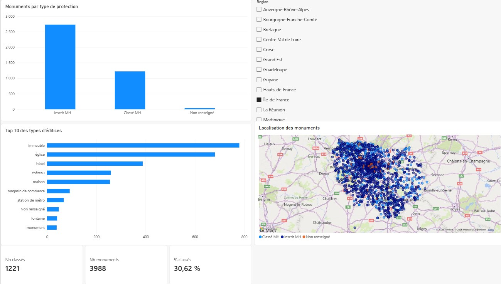
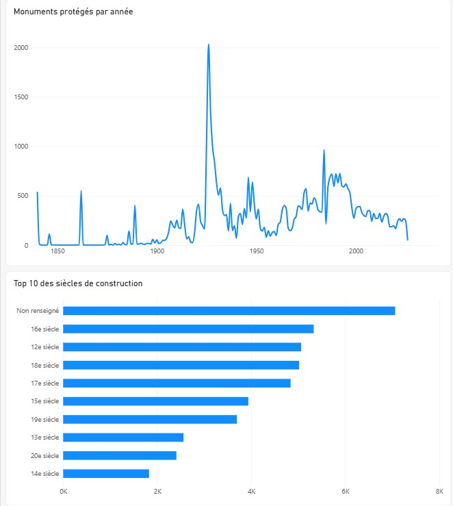

Tableau de bord Power BI des monuments historiques
Les 46 760 monuments protégés de la base Mérimée, regardés cette fois comme le ferait un analyste de données : nettoyage, mesures, visualisation interactive.
- Période
- Octobre 2026
- Type
- Projet personnel
- Données
- Base Mérimée, 46 760 notices
- Outil
- Power BI Desktop

Le point de départ
La base Mérimée recense les immeubles protégés au titre des monuments historiques ; le ministère de la Culture la publie en données ouvertes. Je travaille d'ordinaire ce corpus côté TAL, pour de la recherche d'information et du RAG. Ici, l'objectif était autre : apprendre Power BI et poser sur les mêmes notices des questions d'analyste — combien, où, de quelle époque, protégées quand ?
Préparation des données
- Protection : le champ d'origine mêle dates et statuts (« 1980/01/25 : classé MH ; 1980/01/25 : inscrit MH »). Il est séparé en un type (classé, inscrit, non renseigné) et une année.
- Siècle : une formule M ramène « 4e quart 15e siècle ; 1er quart 16e siècle ; 17e siècle » au siècle de la première campagne de construction.
- Coordonnées : le champ GPS est scindé en latitude et longitude, typées avec les paramètres régionaux adaptés au séparateur décimal.
- Qualité : valeurs manquantes étiquetées « Non renseigné », régions doubles ramenées à la première, et trois dates mal saisies écartées — elles suffisaient à écraser tout le graphique d'évolution.
Mesures et visualisations
Trois mesures DAX se recalculent selon les filtres actifs : le nombre de monuments (COUNTROWS), le nombre de classés (CALCULATE) et la part de classés (DIVIDE).
Le rapport tient en deux pages. La première donne la vue d'ensemble : répartition par type de protection, dix types d'édifices les plus fréquents, carte des monuments et filtre par région, qui met à jour tous les visuels. La seconde porte sur le temps : protections par année depuis 1840 et siècles de construction les plus représentés.

Ce que montrent les données
- Les églises dominent : 10 118 notices, devant les maisons (5 802) et les châteaux (5 704).
- 534 notices portent une protection datée de 1840, année de la première liste de monuments historiques.
- Parmi les siècles connus, le XVIe arrive en tête (5 328 notices), devant le XIIe et le XVIIIe.
Limites
Mérimée est une base surtout textuelle et catégorielle : les mesures restent des comptages et des proportions. Un monument à la fois classé et inscrit est compté comme classé, et un monument à cheval sur deux régions est rattaché à la première. C'est un premier tableau de bord, construit pour apprendre l'outil ; il m'a surtout rappelé que la moitié du travail se joue dans la préparation des données.
Power BI Desktop · Power Query (M) · DAX